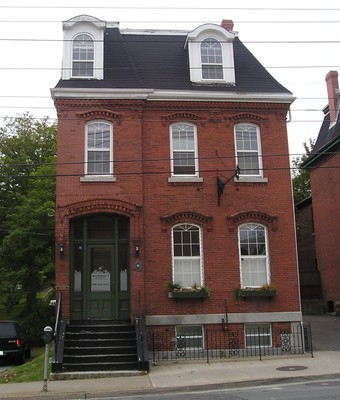
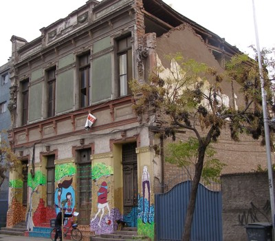
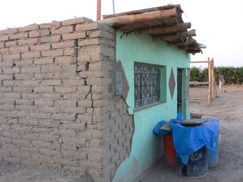
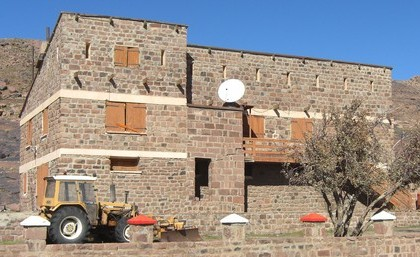

Mampostería, no reforzada [MUR]
Mampostería sin algún tipo de reforzamiento.

Construcción de ladrillos de mampostería no reforzada (cubierta por yeso), Indonesia (J. Bothara)

Un edificio típico de mampostería no reforzada de principios del siglo XX, Halifax, Canada (S. Brzev)

Mampostería de piedra no reforzada, Suiza (T. Schacher)

Mampostería de ladrillo no reforzada dañada en el terremoto de Maule 2010, Chile (S. Brzev)


Mampostería de adobe no reforzada, Peru (Izquierda-N. Tarque y derecha-A. Charleson)

Edificio de mampostería de piedra no reforzada, Marruecos (C. Scawthorn)